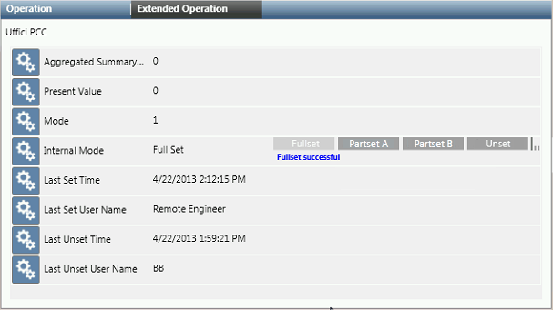

Arm or Disarm an SPC Intrusion Area
Before arming an area, make sure it does not have any active inputs. If an alarm condition is active or a detection device is not ready (for instance, a door was left open), arming will fail with any active inputs reported as Not Ready. To check for active inputs see Get Status or Ready to Arm, below.
- Select Project > Field Networks > SPC network > [SPC panel] > [… ] > [area].
- In the Operation or Extended Operation tab, you can:
- Click Fullset to arm all zones of the area.
- Click Partset A or Partset B to arm groups of zones (as configured in the intrusion system).
- Click Unset to disarm all armed zones of the area
